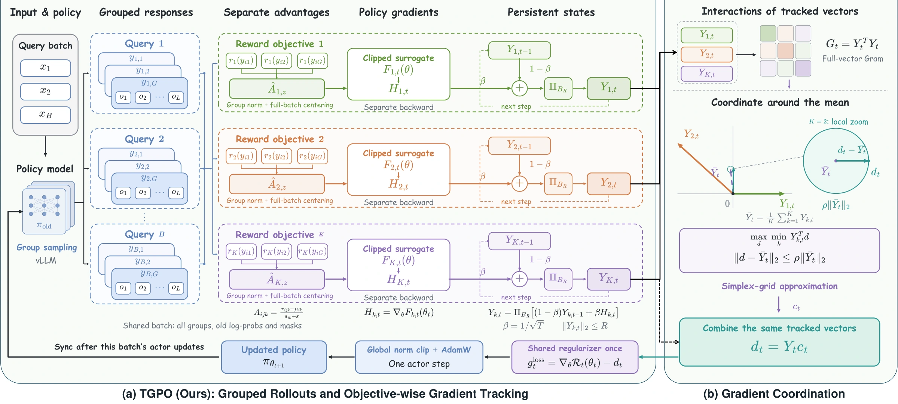
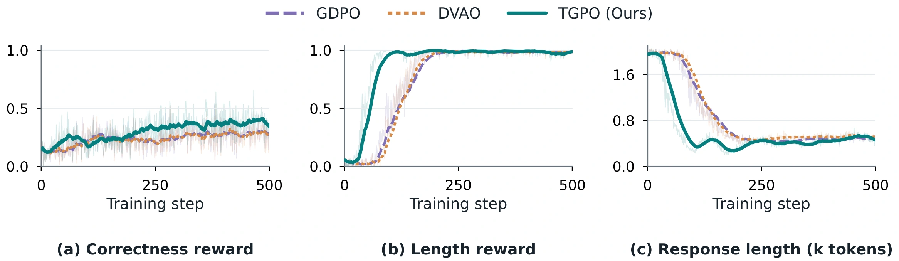
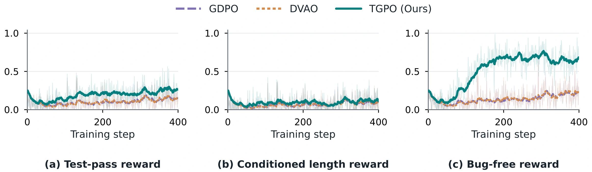
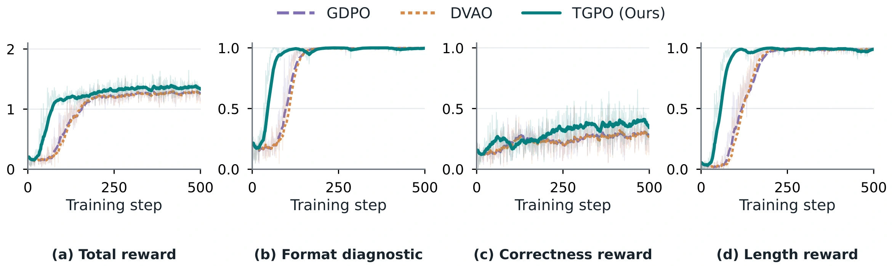
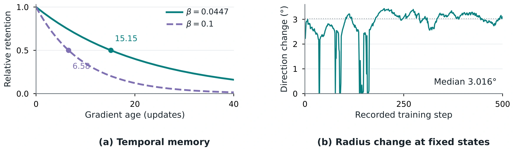
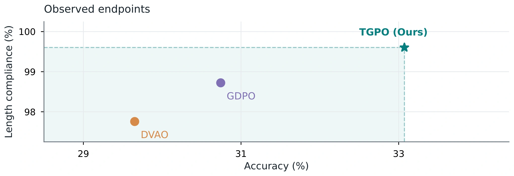
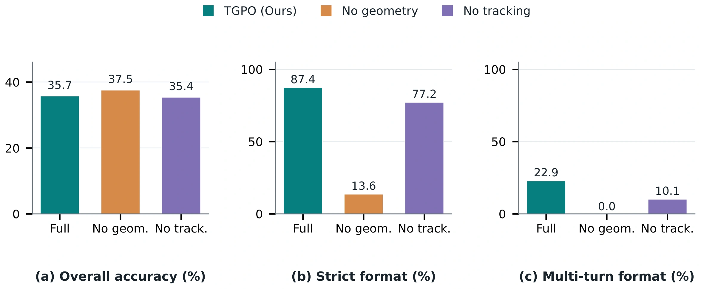

Preserve each objective
Normalize rewards separately and compute an objective-specific policy gradient.
Multi-Reward Reinforcement Learning · Anonymous Submission
Track objective gradients through time.
Coordinate them into a more effective policy update.
01 / Method
TGPO preserves reward-decoupled normalization and maintains a bounded recursive estimate of each objective gradient. Their shared geometry determines a coordinated direction near the mean. The same tracked vectors define both the coordination problem and the gradient supplied to the optimizer.

Normalize rewards separately and compute an objective-specific policy gradient.
Combine new gradients with bounded estimates of their directional history.
Improve the least favorable tracked margin within a neighborhood of the mean direction.
02 / Experimental results
Compare TGPO with GDPO and DVAO across three tasks. The figures show training behavior; the tables report held-out evaluation results.
Mathematical reasoning
At 1.5B, TGPO reaches 33.07% macro accuracy with 0.40% overlength. The comparison spans five mathematical benchmarks.

| Benchmark | Accuracy ↑ | Overlength ↓ | ||||
|---|---|---|---|---|---|---|
| GDPO | DVAO | TGPO (Ours) | GDPO | DVAO | TGPO (Ours) | |
| MATH-500 | 64.30 | 64.55 | 67.75 | 0.70 | 0.80 | 0.05 |
| AIME 2024 | 9.17 | 5.00 | 3.33 | 3.33 | 5.83 | 0.83 |
| AMC 2022–2023 | 35.24 | 34.64 | 45.48 | 0.30 | 1.81 | 0.60 |
| Minerva | 19.49 | 18.66 | 19.94 | 0.28 | 0.18 | 0.09 |
| OlympiadBench | 25.52 | 25.41 | 28.85 | 1.78 | 2.59 | 0.41 |
| Macro average | 30.74 | 29.65 | 33.07 | 1.28 | 2.24 | 0.40 |
| Benchmark | Accuracy ↑ | Overlength ↓ | ||||
|---|---|---|---|---|---|---|
| GDPO | DVAO | TGPO (Ours) | GDPO | DVAO | TGPO (Ours) | |
| MATH-500 | 78.05 | 78.85 | 79.45 | 2.05 | 1.90 | 1.30 |
| AIME 2024 | 22.50 | 24.17 | 15.00 | 17.50 | 10.00 | 0.00 |
| AMC 2022–2023 | 57.23 | 52.41 | 50.60 | 6.02 | 4.82 | 3.01 |
| Minerva | 26.65 | 26.29 | 28.22 | 0.18 | 1.29 | 1.10 |
| OlympiadBench | 39.15 | 38.41 | 40.00 | 3.30 | 3.52 | 1.26 |
| Macro average | 44.72 | 44.02 | 42.65 | 5.81 | 4.30 | 1.33 |
Rates are percentages. Overlength exceeds 1,024 tokens; generation is capped at 2,048. Macro averages weight all five benchmarks equally. Models: 1.5B / 7B. Benchmark sources ↗
Coding reasoning
TGPO produces 15.73% correct responses within 4,000 tokens and 98.77% syntax-valid outputs. Mean response length is 2,666 tokens.

| Metric | GDPO | DVAO | TGPO (Ours) |
|---|---|---|---|
| Pass@1 ↑ | 16.49 | 16.72 | 15.83 |
| Correct and ≤4,000 tokens ↑ | 13.54 | 13.81 | 15.73 |
| Overlength ↓ | 62.97 | 61.98 | 8.53 |
| Syntax-valid ↑ | 93.69 | 95.07 | 98.77 |
| Mean tokens ↓ | 7298.08 | 6885.39 | 2666.17 |
DeepSeek-R1-Distill-Qwen-1.5B; 1,014 scored questions from APPS, CodeContests, Codeforces, and TACO, with four responses per question. Rates are percentages; mean length is measured in tokens. Generation is capped at 32,768 tokens.
Tool use
TGPO achieves 96.06% / 99.07% strict-format compliance at 1.5B / 3B, with multi-turn format compliance reaching 77.88% / 89.38%.
| Metric | GDPO | DVAO | TGPO (Ours) |
|---|---|---|---|
| Overall accuracy ↑ | 37.46 | 44.00 | 40.09 |
| Strict format ↑ | 92.73 | 77.18 | 96.06 |
| Multi-turn format ↑ | 58.38 | 16.63 | 77.88 |
| Metric | GDPO | DVAO | TGPO (Ours) |
|---|---|---|---|
| Overall accuracy ↑ | 51.59 | 50.92 | 47.28 |
| Strict format ↑ | 97.66 | 94.18 | 99.07 |
| Multi-turn format ↑ | 75.25 | 54.75 | 89.38 |
All 4,441 BFCL-v3 questions. Overall accuracy averages the non-live, live, and multi-turn components. Strict format is response-weighted; multi-turn format requires a fully compliant trajectory. Models: Qwen2.5-Instruct-1.5B / 3B.
03 / Analysis
Training trajectories, parameter sensitivity, and component ablations show how the two parts of TGPO work together.




| Variant | Accuracy ↑ | Strict format ↑ | Multi-turn format ↑ |
|---|---|---|---|
| Full TGPO (Ours) | 35.74 | 87.44 | 22.88 |
| No geometry | 37.52 | 13.64 | 0.00 |
| No tracking | 35.36 | 77.21 | 10.13 |
04 / Reproduce
Five training configurations, pinned environments, dataset download scripts, and evaluation pipelines are available in the repository.
Separate training and inference dependencies, with pinned versions and installation scripts.
DeepScaleR, Eurus code data, ToolRL, and the corresponding evaluation suites.
Task-specific launchers for TGPO and its baselines, checkpoint export, and benchmark scoring.
# Download this repository as TGPO.zip
unzip TGPO.zip -d TGPO
cd TGPO
bash env/setup_train.sh
bash env/setup_eval.sh
# Download models and prepare public data
.venv-train/bin/python scripts/download_models.py all
.venv-train/bin/python scripts/download_data.py all